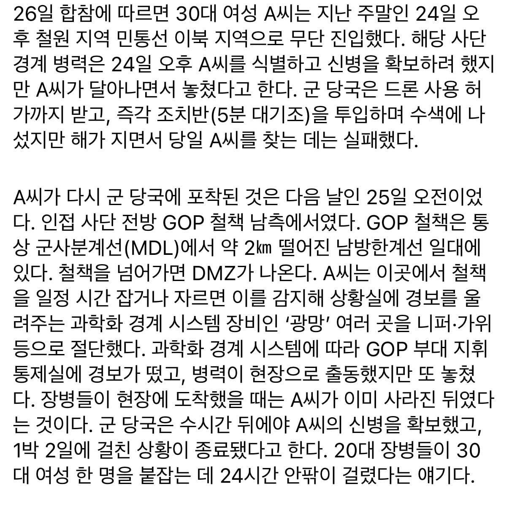

경계병력 추적을 따돌리면서 민통선 침투
군에서 드론 띄우고 5분대기조 투입했지만 추적 실패
철책 광망을 한군데도 아니고 여러군데 자르는데 계속 놓침
그러고서 20시간 뒤에 잡힘
정체가 뭐임??

경계병력 추적을 따돌리면서 민통선 침투
군에서 드론 띄우고 5분대기조 투입했지만 추적 실패
철책 광망을 한군데도 아니고 여러군데 자르는데 계속 놓침
그러고서 20시간 뒤에 잡힘
정체가 뭐임??
그냥 자기 집에서 메일 보내면 뭐가 넘어갔는지 누가 알아
정보 암호화하면 뭐 어떻게 알거임
시민단체?
대항군인가?
나물이이래서비쌈
풀 유기농
블랙위도우
나루토 아니냐
잡히긴 했네, 안잡히고 진짜 월북했거나 지뢰밟고 뒤졌으면 진짜 사고난건데
잡혀준 것 아닐까 싶을 정도. 어차피 풀려날 거라 보고 수사 어떻게 하는지 가이드까지 쓰려고.
잡혀준 게 아니면 사실상 못 잡는다는 거지.
북쪽에 고양이 밥그릇 놔두고 와야 하는데.. 잡혔네.
굶주린 북괴군이 코박고 먹을듯
집 돌아갈려는 간첩인가보네
보통 바다루트 타는게 쉽지않나..?
요즘 북서풍이라 빡셀걸
빡센데 그만큼 경비는 허술함
트레이서냐
여러모로 시험해본거 아닐까?
자연인?
근데.. 원래 숨는 놈이 훨씬 유리한 게임 아님?
산속에 누구 하나 숨었다 그러면.. 그거 찾으려면 당연히 수십명 동원해도 오래 걸리는 거 아님?
무슨 20대 장병들이 추적 스킬을 보유한 것도 아니고.. 사냥꾼도 아닌데..
산속에서 30대 여성이든 50대 여성이든 작정하고 숨어들면 쉽게 못 찾는게 정상 아니야?
개활지에서 뛰어서 도망치는게 보이는 걸 잡는 거면 몰라도.. 넓은 지역에서 숨은 사람을 찾는건데..
평생을 저 지대에서 버섯 나물 캐던 사람이묜 가능
쑥캐러오셨나
고문해봐야되는거아님?
??? 장관: 일단 팩트체크부터 해야..
이래서 지랄나면 그냥 쏴야한다 초병이 주렁주렁달고 뛰어가서 잡을수도없고 그렇다고 벗고 뛰어갈수도없고
걍 스피커로 경고 방송 조지고 불이행시 사살 해야함 뭘 병력풀어서 찾고..
4성장군 눈물흘리게 해주고싶은 여자?
박현순
GOP 좃같이 넓은 섹터 대비 T.O는 일반 보병부대 규모라 병력이 항상 너무 적어
진짜 좋게 봐서 독거미부대 이런데서 대항군으로 투입된거 아닐까? 국방부 차원에서 기밀로 묻어둔거고..ㅋㅋㅋ 근데 쓰다보니 말도 안된단 생각 드네ㅋㅋㅋ
저쪽 지형이랑 군경계 시스템까지 다 알고 저지른 일 아님?ㄷㄷㄷ
트래픽 남아서 뭐가 넘어갔는지 알수있잖아